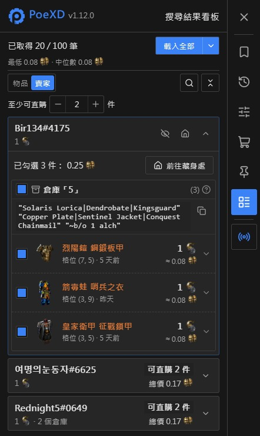

資料留在自己的瀏覽器
不需要註冊帳號，也沒有自建後端伺服器、分析統計或追蹤腳本；書籤、詞綴群組、PoB 清單與快捷鍵設定全都只存在本機瀏覽器裡。
玩 PoE 1／PoE 2 時一直找不到合手的交易市集輔助介面，乾脆自己動手寫。業餘時間維護開源擴充套件，把即時搜尋監看、詞綴 T 階快選、PoB 裝備比對與國際服繁簡漢化收進同一個側邊工作台。


已上架 Chrome Web Store 與 Microsoft Edge 附加元件，直接長在官方交易網站旁而不另設外部拍賣頁。
不想被強迫接受一整包肥大套件，因此把每個功能拆成可獨立開關的模組；側邊工作台可停靠左側或右側，並自訂介面縮放比例與聚焦快捷鍵。
poe.ninja／pobb.in／pastebin 網址，並可與 TFT Trade 互相匯入匯出書籤。chromium.zip 手動載入未封裝版本。TECH STACKTypeScript · Vue 3 · WXT · Tailwind CSS · Vitest · Playwright


不需要註冊帳號，也沒有自建後端伺服器、分析統計或追蹤腳本；書籤、詞綴群組、PoB 清單與快捷鍵設定全都只存在本機瀏覽器裡。
擴充套件原始碼與詞綴資料處理程式公開在 GitHub，任何人都能檢查權限請求與程式碼行為，也歡迎提交 Issue 回報異常或討論需求。
每逢 PoE 1 或 PoE 2 改版、新詞綴實裝或官方交易網站調整版面時同步維護，詳細變更內容都會整理在 GitHub Releases。